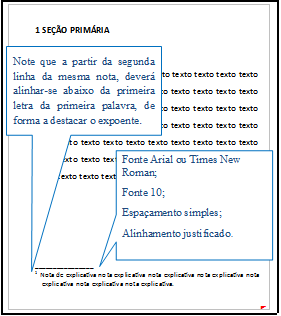
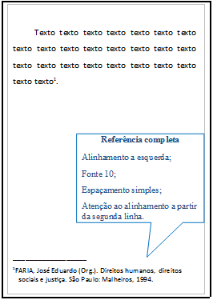
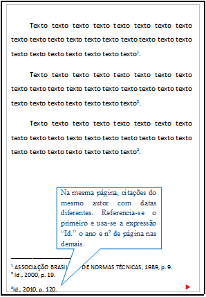
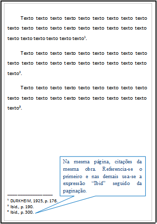
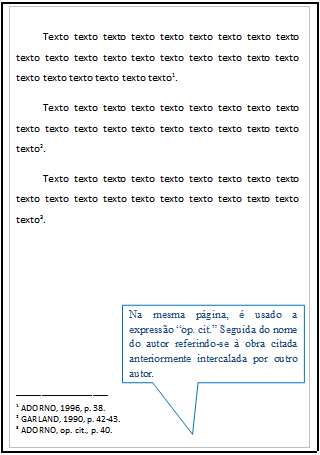
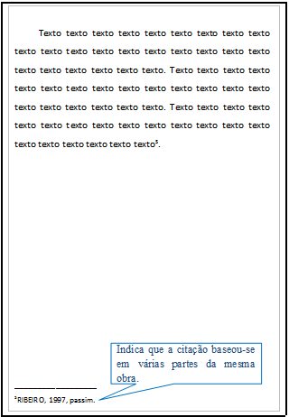
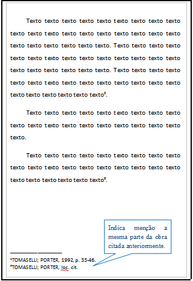
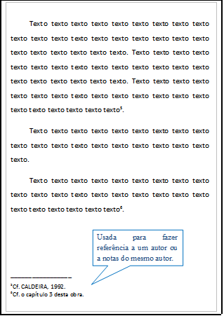
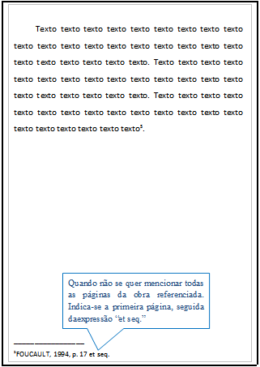

Podem ser de dois tipos: nota explicativa ou nota de referência, e devem ser alinhadas, a partir da segunda linha da mesma nota, abaixo da primeira letra da primeira palavra, de forma a destacar o expoente e sem espaço entre elas e com fonte menor que a do texto.
Recomenda-se não usar os dois tipos de notas de rodapé no mesmo trabalho.
São notas usadas para comentários, esclarecimentos ou explanações, que não possam ser incluídos no texto. A numeração das notas é feita por algarismos arábicos, devendo ter numeração única e consecutiva, Não se inicia a numeração a cada página.
Exemplo:
A numeração das notas de referência é feita por algarismos arábicos, devendo ter numeração única e consecutiva para cada capítulo ou parte. Não se inicia a numeração a cada página.
A primeira citação de uma obra, em nota de rodapé, deve ter sua referência completa.
Exemplo:
As subsequentes citações da mesma obra e na mesma página podem ser referenciadas de forma abreviada (expressões latinas), utilizando as seguintes expressões, abreviadas quando for o caso:
Idem - mesmo autor - id.
Exemplo:
Ibidem - na mesma obra - ibid.
Exemplo:
Opus citatum, opere citato – obra citada – op. cit.
Exemplo:
Passim – aqui e ali, em diversas passagens – passim
Exemplo:
Loco citato – no lugar citado – loc. cit.
Exemplo:
Confira, confronte – Cf.
Exemplo:
Seguinte ou que se segue – et seq.
Exemplo:
